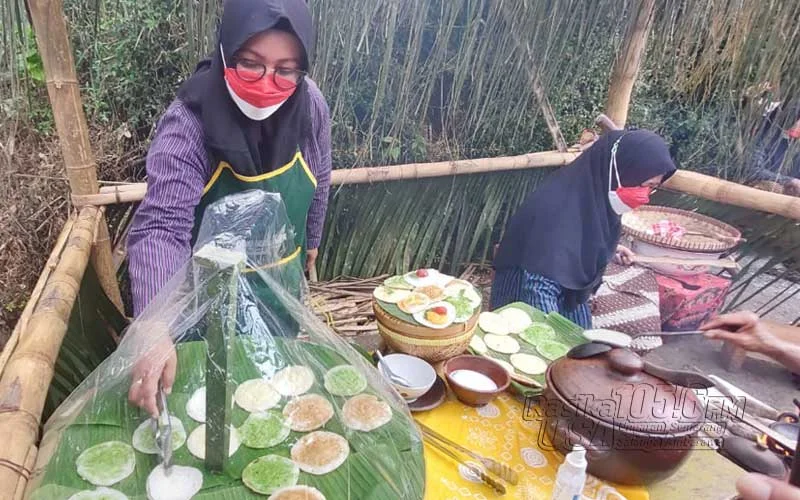

Mari Belajar Median & Modus dengan Eksperimen
Kegiatan pembelajaran ini adalah aktivitas terpandu untuk membantu kamu menerapkan konsep median dan modus dalam situasi nyata. Melalui pengamatan, analisis data, dan diskusi, kamu akan memahami bagaimana statistika membantu pemain Serabi Ngampin membuat keputusan bisnis yang lebih baik! 📊
AKTIVITAS 1
Amati data penjualan serabi selama satu minggu dan identifikasi pola yang ada

📋 Kumpulkan Data
Lihat data penjualan serabi Ngampin selama 10 hari berturut-turut yang dicatat penjual.
👀 Amati Data
Lihat dengan seksama: Nilai mana yang sering muncul? Nilai mana yang paling jarang? Ada nilai yang sangat tinggi atau sangat rendah?
📝 Catat Observasi
Tulis pengamatanmu: "Nilai yang paling sering adalah... Nilai tertinggi adalah... Nilai terendah adalah..."
📊 Data Penjualan Serabi (10 hari):
| Hari | Potongan Serabi Terjual |
|---|---|
| Hari 1 | 20 porsi |
| Hari 2 | 25 porsi |
| Hari 3 | 30 porsi |
| Hari 4 | 25 porsi |
| Hari 5 | 35 porsi |
| Hari 6 | 25 porsi |
| Hari 7 | 40 porsi |
| Hari 8 | 30 porsi |
| Hari 9 | 25 porsi |
| Hari 10 | 28 porsi |
Tips Observasi:
Gunakan jari untuk menunjuk setiap angka saat membaca. Hitung berapa kali angka 25 muncul, berapa kali 30 muncul, dst. Ini akan memudahkan mu menemukan modus!
AKTIVITAS 2
Susun ulang data penjualan dari nilai yang paling kecil hingga paling besar
🔢 Temukan Nilai Terkecil
Cari angka paling kecil dari seluruh data. Tulis di paling depan.
Nilai terkecil: 20
➡️ Lanjutkan Mengurutkan
Setelah 20, cari angka berikutnya yang terkecil. Terus lakukan hingga semua data terurut.
✅ Verifikasi Urutan
Periksa: Apakah setiap angka lebih besar dari sebelumnya? Apakah ada yang terlewat?
📊 Hasil Pengurutan Data:
20, 25, 25, 25, 25, 28, 30, 30, 35, 40
Total data: 10 angka | Dari: 20 | Sampai: 40
Tip Pengurutan:
Gunakan kertas dan pensil! Tulis angka-angka di selembar kertas, kemudian potong-potong dan tata dari kecil ke besar. Cara ini lebih mudah dan tidak mudah salah.
AKTIVITAS 3
Temukan nilai tengah dari data yang sudah terurut
🔢 Hitung Jumlah Data
Berapa banyak angka dalam data? Kita punya 10 angka (GENAP), jadi nilai tengah ada 2 angka di tengah.
👉 Tentukan Posisi Tengah
Data genap: (10 ÷ 2) = 5 dan (5 + 1) = 6. Jadi ambil data ke-5 dan ke-6.
Data ke-5: 25 | Data ke-6: 28
➕ Hitung Rata-rata Dua Nilai Tengah
Median = (25 + 28) ÷ 2 = 53 ÷ 2 = 26,5
📊 Visualisasi Data Terurut:
20, 25, 25, 25, 25, 28, 30, 30, 35, 40
5 angka di kiri │ 5 angka di kanan
✅ Hasil: MEDIAN = 26,5 porsi
Cara Cepat Mencari Median:
Mulai dari awal dan akhir secara bersamaan (coret dari depan 1, dari belakang 1, ulangi) sampai mencapai tengah!
AKTIVITAS 4
Hitung frekuensi setiap nilai dan temukan yang paling sering muncul
📋 Buat Daftar Frekuensi
Tulis semua nilai yang berbeda, lalu hitung berapa kali masing-masing muncul dalam data.
✅ Hitung Frekuensi
Gunakan tally mark (garis-garis) untuk menghitung, atau baca data terurut yang sudah kita buat.
🏆 Temukan Frekuensi Tertinggi
Nilai mana yang muncul paling banyak? Itulah modus!
📊 Tabel Frekuensi:
| Nilai Penjualan (Porsi) | Frekuensi (Berapa Kali Muncul) |
|---|---|
| 20 | 1 kali |
| 25 | 4 kali ← TERBANYAK! 🏆 |
| 28 | 1 kali |
| 30 | 2 kali |
| 35 | 1 kali |
| 40 | 1 kali |
✅ Hasil: MODUS = 25 porsi
Cara Cepat Menghitung:
Dari data terurut, cari nilai yang memiliki "kelompok" angka sama yang paling panjang! Data: 20, 25, 25, 25, 25, ← ini kelompok 25 yang panjang! Jadi modus = 25!
AKTIVITAS 5
Analisis hasil median dan modus, lalu buatlah rekomendasi untuk penjual
💭 Bandingkan Median & Modus
Median = 26,5 vs Modus = 25. Kenapa berbeda? Apakah perbedaan ini penting?
Jawaban: Median sedikit lebih tinggi karena ada nilai ekstrem (40). Modus lebih "realistis" untuk pola harian.
🤔 Diskusikan Pertanyaan
• Berapa porsi yang sebaiknya penjual siapkan setiap hari?
• Apakah harus sama persis dengan median atau modus?
• Bagaimana jika ada hari spesial?
📝 Buat Kesimpulan
Tulis rekomendasi untuk penjual berdasarkan analisis median dan modus. Berikan alasan yang jelas.
🎯 Contoh Kesimpulan:
"Berdasarkan analisis data penjualan 10 hari, penjual sebaiknya menyiapkan 25-27 porsi serabi setiap harinya. Alasannya:
✓ Modus = 25 menunjukkan pola penjualan yang paling sering
✓ Median = 26,5 menunjukkan nilai yang seimbang
✓ Dengan target 25-27, penjual tidak akan terlalu banyak stok sisa dan tidak kekurangan bahan
✓ Pada hari-hari libur atau festival, penjual bisa menambah produksi hingga 30-40 porsi"
Tips Diskusi Kelompok:
Dengarkan pendapat teman! Mungkin ada perspektif lain yang belum kamu pikirkan. Diskusi membuat pemahaman lebih kaya! 💬
SOAL LATIHAN 1
Analisis jangkauan data dan implikasinya terhadap kualitas produk
Di sebuah pasar, penjual serabi ngampin membuat serabi secara tradisional menggunakan sendok sayur untuk menuang adonan ke dalam cetakan. Namun, beberapa pelanggan mulai memberikan masukan bahwa ukuran dan ketebalan serabi terkadang berbeda—ada yang terasa lebih tebal dan ada yang lebih tipis. Hal ini ternyata dipengaruhi oleh banyaknya adonan yang dituangkan ke dalam cetakan.
Karena ingin memperbaiki kualitas dagangannya, penjual mencoba melakukan evaluasi sederhana dengan menimbang beberapa adonan yang sudah dituangkan ke dalam cetakan sebelum dimasak. Dari hasil pengukuran tersebut, diperoleh data berat adonan sebagai berikut:
| Centong ke- | Berat Adonan |
|---|---|
| 1 | 57 gram |
| 2 | 60 gram |
| 3 | 58 gram |
| 4 | 62 gram |
| 5 | 59 gram |
| 6 | 61 gram |
| 7 | 58 gram |
Informasi Penting: Penjual menetapkan bahwa selisih berat adonan yang masih dapat diterima tidak lebih dari 4 gram agar hasil serabi tetap seragam.
✅ SOLUSI & PENJELASAN:
Step 1: Identifikasi Nilai Minimum dan Maksimum
Dari data: 57, 60, 58, 62, 59, 61, 58
Nilai Minimum (terkecil): 57 gram
Nilai Maksimum (terbesar): 62 gram
Step 2: Hitung Jangkauan (Range)
Jangkauan = Nilai Maksimum - Nilai Minimum
Jangkauan = 62 - 57 = 5 gram
Step 3: Bandingkan dengan Standar Penjual
Standar Penjual: Selisih tidak lebih dari 4 gram
Jangkauan Data: 5 gram
Kesimpulan: 5 gram > 4 gram ⚠️ TIDAK SESUAI STANDAR
🎯 JAWABAN AKHIR:
Jangkauan = 5 gram
Arti Nilai Jangkauan dalam Konteks Pembuatan Serabi:
• Jangkauan 5 gram berarti ada perbedaan sebesar 5 gram antara adonan terkecil (57g) dan terbesar (62g)
• Perbedaan ini ternyata MELEBIHI toleransi penjual yang hanya 4 gram
• Hal ini menunjukkan bahwa teknik penuangan adonan penjual masih KURANG KONSISTEN
• Akibatnya, serabi yang dihasilkan akan berbeda-beda ukuran dan ketebalannya
• Penjual perlu melatih teknik penuangan agar lebih presisi dan konsisten
• Target: Kurangi jangkauan dari 5 gram menjadi ≤ 4 gram
🎨 Praktik Tradisional: Penjual serabi ngampin menggunakan "sendok sayur" sebagai alat pengukur, bukan timbangan digital. Ini adalah pengetahuan lokal yang diwariskan turun-temurun. Namun, metode tradisional ini rentan terhadap ketidakkonsistenan.
📊 Standar Mutu (Ukuran Jangkauan): Dengan menggunakan jangkauan data (range), penjual dapat mengukur SEBERAPA BESAR variasi dalam proses mereka. Jangkauan 5 gram menunjukkan bahwa proses masih belum optimal. Ini mendemonstrasikan bagaimana matematika (statistika) dapat meningkatkan kualitas produk tradisional.
🔄 Koneksi: Etnomatematika di sini menunjukkan integrasi pengetahuan tradisional (sendok sebagai alat ukur) dengan konsep matematis modern (jangkauan/range) untuk mencapai standar mutu yang lebih baik.
🎓 Elemen STEAM dalam Soal Ini:
Pengukuran massa/berat adonan secara akurat. Pemahaman tentang konsistensi dan variabilitas dalam proses pembuatan.
Penggunaan timbangan untuk mengukur berat adonan. Alat tradisional (sendok) vs. alat modern (timbangan) untuk kontrol kualitas.
Desain proses produksi yang konsisten. Penentuan standar mutu (toleransi 4 gram). Optimasi teknik penuangan untuk mengurangi variasi.
Seni tradisional membuat serabi dengan tangan. Kreativitas dalam mencari solusi untuk menjaga konsistensi sambil mempertahankan karakter tradisional.
Perhitungan jangkauan/range, analisis data, perbandingan dengan standar. Menggunakan angka untuk mengambil keputusan bisnis.
SOAL LATIHAN 2
Analisis variabilitas waktu memasak menggunakan simpangan rata-rata
Di sebuah warung, seorang penjual serabi ngampin ingin memastikan kualitas rasa dan tekstur serabinya tetap konsisten. Penjual menyadari bahwa salah satu faktor penting adalah lama waktu memasak setiap serabi di atas tungku. Jika waktu memasak terlalu lama atau terlalu cepat, serabi bisa menjadi terlalu kering atau kurang matang.
Untuk mengevaluasi proses memasaknya, penjual mencatat waktu memasak (dalam menit) untuk beberapa serabi yang dibuat pada hari itu untuk menemukan tingkat kematangan yang pas. Data yang diperoleh:
| Cetakan ke- | Lama Memasak (Menit) |
|---|---|
| 1 | 5 menit |
| 2 | 6 menit |
| 3 | 8 menit |
| 4 | 6 menit |
| 5 | 5 menit |
| 6 | 5 menit |
| 7 | 7 menit |
Pertanyaan: Hitunglah rata-rata waktu memasak serabi, tentukan simpangan rata-rata dari data waktu memasak tersebut, kemudian jelaskan apakah waktu memasak yang dilakukan penjual sudah cukup konsisten!
✅ SOLUSI & PENJELASAN LANGKAH DEMI LANGKAH:
Step 1: Hitung Rata-rata (Mean)
Data: 5, 6, 8, 6, 5, 5, 7 (total 7 data)
Rata-rata = (5 + 6 + 8 + 6 + 5 + 5 + 7) ÷ 7
Rata-rata = 42 ÷ 7 = 6 menit
Step 2: Hitung Simpangan Setiap Data Terhadap Rata-rata
Simpangan = |Data - Rata-rata| = |Data - 6|
| Data | Simpangan |Data - 6| |
|---|---|
| 5 | |5 - 6| = 1 |
| 6 | |6 - 6| = 0 |
| 8 | |8 - 6| = 2 |
| 6 | |6 - 6| = 0 |
| 5 | |5 - 6| = 1 |
| 5 | |5 - 6| = 1 |
| 7 | |7 - 6| = 1 |
Step 3: Hitung Simpangan Rata-rata
Simpangan Rata-rata = (Jumlah semua simpangan) ÷ Banyak data
Jumlah simpangan = 1 + 0 + 2 + 0 + 1 + 1 + 1 = 6
Simpangan Rata-rata = 6 ÷ 7 = 0,86 menit (≈ 0,9 menit atau 51 detik)
🎯 JAWABAN & INTERPRETASI:
Rata-rata waktu memasak = 6 menit
Simpangan Rata-rata = 0,86 menit (≈ 51 detik)
Apakah Konsisten? ✅ YA, CUKUP KONSISTEN!
Alasan:
• Simpangan rata-rata hanya 0,86 menit menunjukkan bahwa data tersebar DEKAT dengan nilai rata-ratanya
• Variasi waktu memasak hanya berkisar ±0,86 menit dari rata-rata 6 menit
• Ini berarti waktu memasak berkisar antara (6 - 0,86) = 5,14 menit sampai (6 + 0,86) = 6,86 menit
• Rentang ini sangat kecil, menunjukkan penjual SUDAH TERAMPIL dalam mengatur waktu memasak
• Kualitas serabi yang dihasilkan SEHARUSNYA cukup konsisten
Tips Interpretasi Simpangan Rata-rata:
Semakin KECIL simpangan rata-rata = SEMAKIN KONSISTEN data
Dalam kasus ini, 0,86 adalah SANGAT KECIL dibanding dengan rata-rata 6, jadi penjual BENAR-BENAR KONSISTEN! 🎯
⏰ Pengukuran Waktu Tradisional: Penjual serabi ngampin tidak menggunakan timer digital, melainkan mengandalkan indera dan PENGALAMAN untuk mengukur waktu memasak. Ini adalah bentuk "jamak internal" yang dikembangkan melalui praktik berulang-ulang selama bertahun-tahun.
📊 Simpangan Rata-rata sebagai Ukuran Presisi: Dengan menghitung simpangan rata-rata, penjual dapat MENGUKUR SEBERAPA PRESISI kemampuannya secara matematis. Angka 0,86 menit membuktikan bahwa intuisi dan pengalaman penjual SANGAT AKURAT dan KONSISTEN.
🔄 Koneksi: Etnomatematika di sini menunjukkan bagaimana pengetahuan tradisional (intuisi, pengalaman, dan keterampilan manual) dapat DIVALIDASI dan DITINGKATKAN melalui analisis matematika modern, tanpa menghilangkan karakter tradisionalnya.
🎓 Elemen STEAM dalam Soal Ini:
Pemahaman tentang proses masak/pemanasan. Reaksi kimia adonan terhadap panas. Bagaimana waktu mempengaruhi tekstur dan rasa serabi.
Penggunaan timer untuk mengukur waktu secara akurat. Tungku tradisional vs. modern. Kontrol suhu dan waktu memasak.
Optimasi waktu memasak untuk hasil terbaik. Standar kualitas (tingkat kematangan). Desain proses untuk mencapai konsistensi.
Seni memasak yang dikembangkan melalui intuisi dan pengalaman. Kreativitas dalam menyesuaikan waktu memasak untuk kondisi berbeda.
Perhitungan rata-rata, simpangan absolut, simpangan rata-rata. Analisis variabilitas data untuk mengevaluasi konsistensi.
Selamat! Kamu telah menyelesaikan semua kegiatan pembelajaran dan mengerjakan dua soal latihan dengan penuh analisis. Kamu sudah memahami bagaimana statistika (median, modus, jangkauan, dan simpangan rata-rata) membantu penjual serabi membuat keputusan yang lebih baik. Pembelajaran dengan konteks nyata seperti ini akan membuat konsep matematika lebih bermakna! 🚀📊
Siap untuk tantangan soal-soal lebih lanjut? Mari tingkatkan pemahamanmu! 💪
LKPD Matematika Kelas 8 • Statistika • Guiding Activities • Median & Modus • Dengan Etnomatematika & STEAM